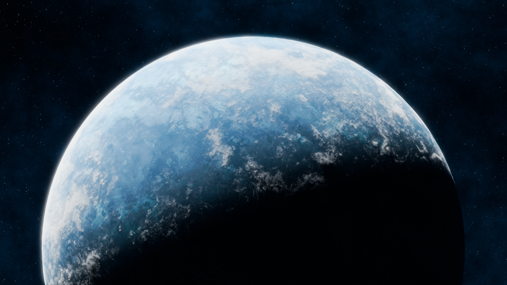
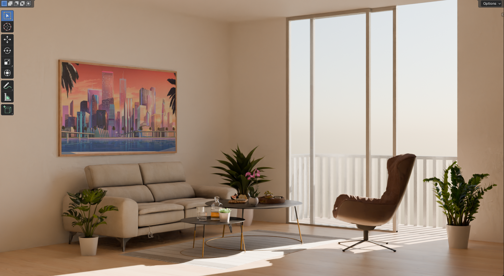
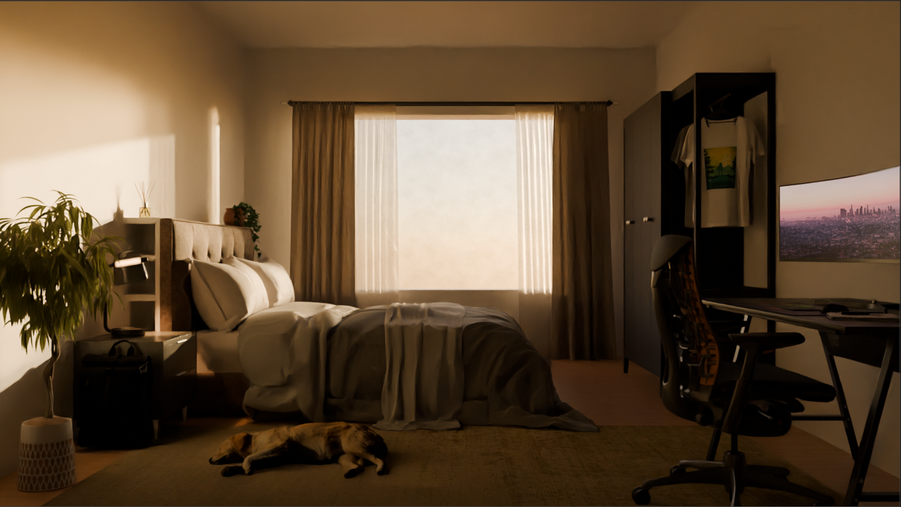
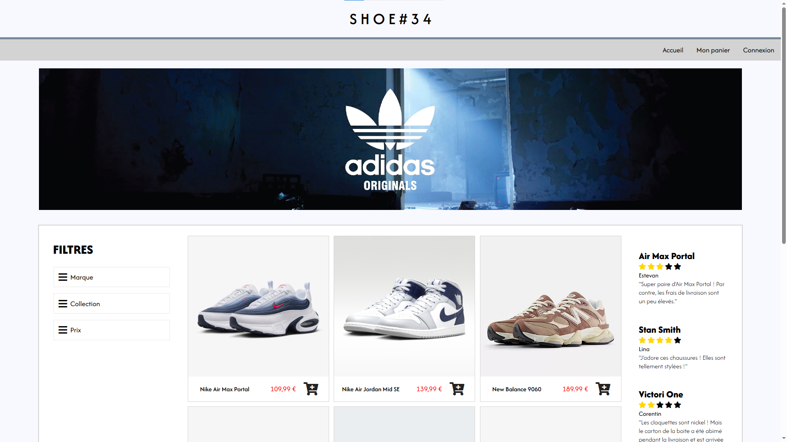
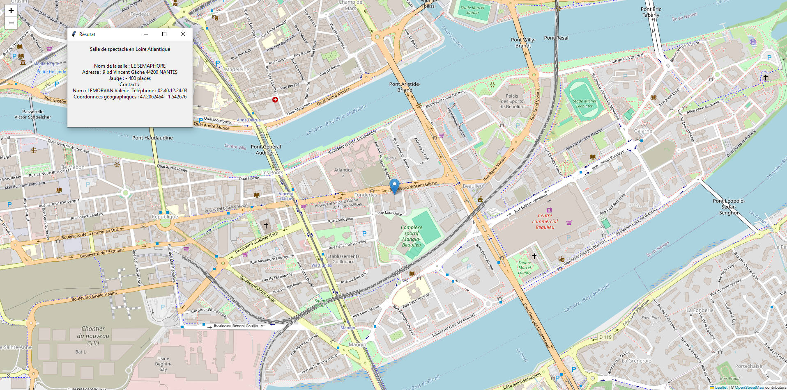

Découvrez mes projets
Voici une présentation détaillée de chacun de mes projets.
Shadorian est mon project musical que j'ai commencé en 2020, principalement pendant le confinement. Je suis une artiste électro qui fait de la House, de la musique style Cyberpunk, de la Midtempo, de la Techno
et de la Bass music - voici un exemple de ce à quoi ça ressemble -.
Je fais aussi des remixes de chansons pop et rap que j'aime, juste pour fun.
L'univers de Shadorian est un monde cyberpunk, où la technologie est partout, la population
s'est concentrée dans de gigantesques villes avec des gratte-ciel à perte de vue, et des lumières néon partout. J'aime cett esthétique et elle
m'inspire dans mes morceaux.
Pour les visuels, j'utilise mes compétences en Blender pour créer les scènes que je veux dans les m/v. Elles sont encore en cours de travail, cela prend beaucoup de temps, mais comme je me perfectionne avec Blender,
ça va plus vite.
Voici mes dernières tracks, alors allez les écouter ! Et si vous aimez mes morceaux, n'hésitez pas à les partager avec vos amis, votre famille, cela m'aiderait beaucoup et me soutiendrait !
MODÉLISATION 3D
Mon aventure sur Blender a commencé en 2020 quand ma meilleure amie m'a montré ses maisons isométriques. J'étais impressionnée par le rendu
et je voulais faire la même chose.
J'ai donc immédiatement commencé par une maison isométrique, en suivant un tutoriel mais j'ai ensuite réalisé que c'était trop compliqué pour moi, que c'était un peu trop ambitieux et que je devrais peut-être commencer par des choses plus simples
une débutante.
Alors j'ai cherché des tutoriels pour débutants et trouvé
le tutoriel que tout le monde suit : Blender Tutorial for Complete Beginners
by Blender Guru aka le tutoriel du Donut.
Je ne l'ai jamais fini (je devrais...), j'ai essayé d'autres tutoriels et j'ai commencé à faire mes propres rendus. Voici une galerie regroupant tous mes rendus finaux et essais.




Projets Personnels
J'ai aussi quelques projets personnels que je fais dans mon temps libre, juste pour le plaisir. Voici quelques-uns d'entre eux.
J'ai essayé à plusieurs reprises de faire un jeu vidéo, mais je n'ai jamais réussi à finir quoi que ce soit,
j'ai toujours abandonné en cours de route. La raison est que je manquais de temps et que j'avais des idées un peu trop ambitieuses ahah 😅.
J'ai essayé de faire un FPS multijoueur à plusieurs reprises sur différent logiciels (Unity, Unreal Engine, Godot) et un jeu d'horreur sur Unreal Engine.
Ces projets n'ont pas abouti à grand chose, mais je n'abandonne pas l'idée de reprendre un de ces projets un jour et de le finir, même si ce n'est pas pour tout de suite.
J'ai aussi fait quelques sites web pour des projets personnels, comme un site pour mon projet musical Shadorian , un site pour une future corporation dans Star Citizen, et un site pour un restaurant coréen fictif.
Je travaille encore sur ces sites, les améliorant au fur et à mesure que j'acquiers de nouvelles compétences en développement web. Je les partagerai ici une fois qu'ils seront un peu plus avancés !
Projets Scolaires
Pendant mes études, j'ai fait plusieurs projets en informatique. Voici quelques exemples en images et vidéos de ce que j'ai fait.

